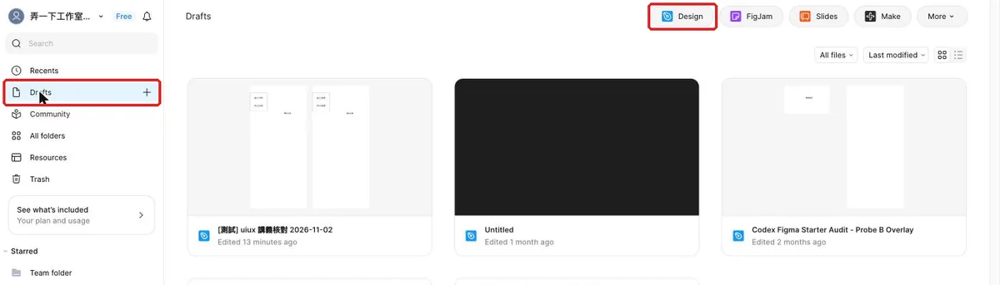
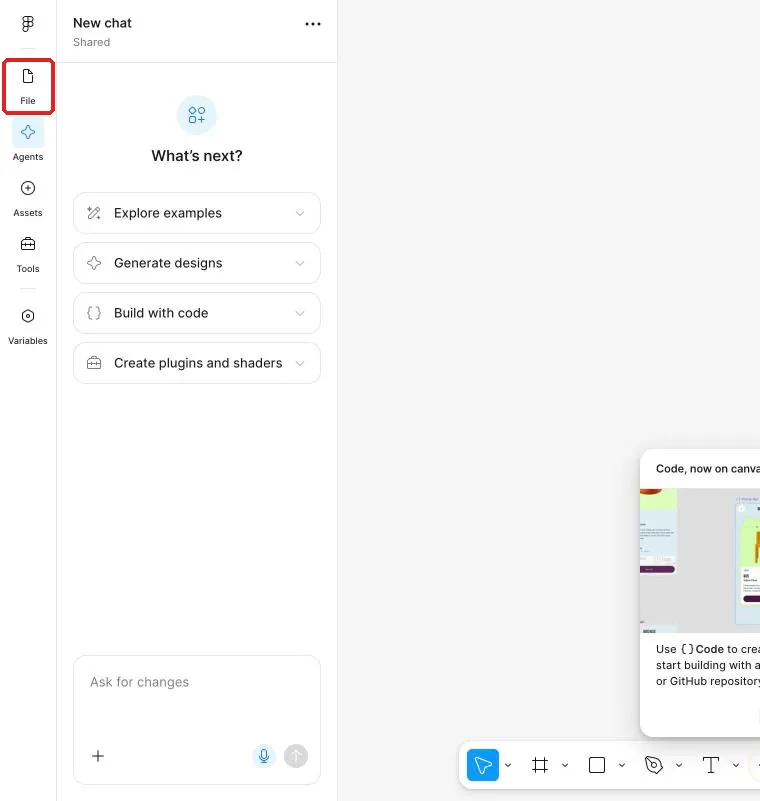
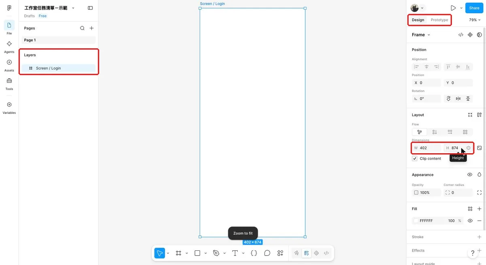
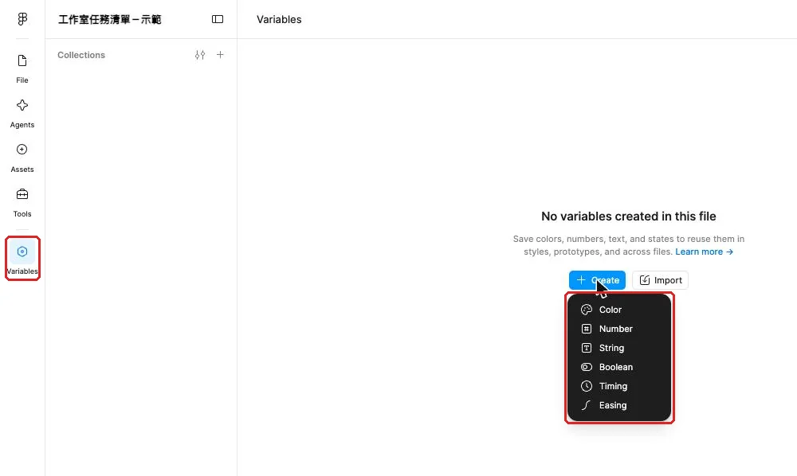
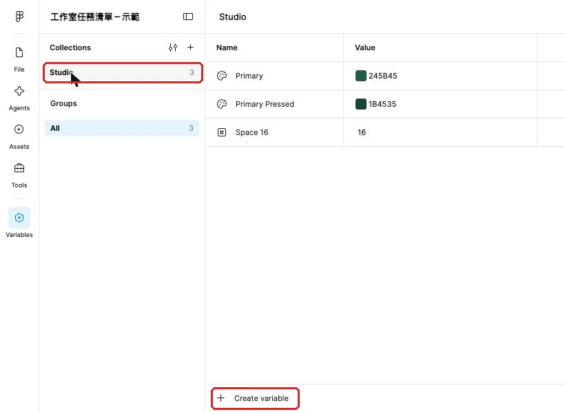
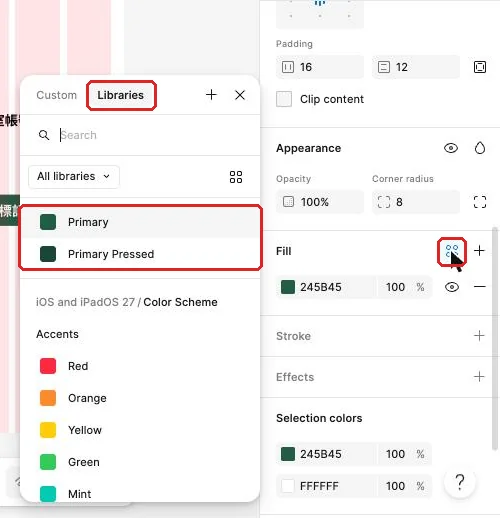
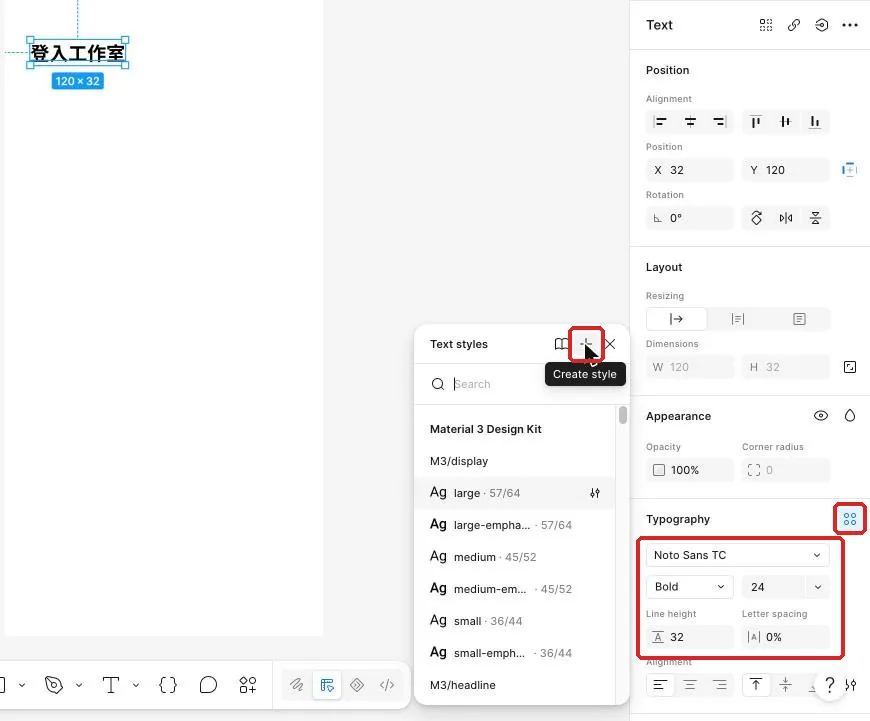

讓畫面看得清楚：色彩、字型與閱讀順序
工作室人員要在手機上登入並查看任務，先建立一套能快速分出標題、內容、動作與狀態的視覺規則。
從第一張工作室登入畫面開始
你正在替一間小型工作室設計待處理清單。工作人員打開手機後，要先看懂這是哪個系統、接著該輸入什麼，最後找到登入動作；如果帳號格式有問題，畫面還要說清楚發生什麼事。這堂先處理閱讀順序，而不是急著把每個元素排得很精緻，因為顏色和文字沒有規則，後面的清單、詳情與確認畫面也會各說各話。
這是整套作品的起點。先開啟本堂起始材料，確認登入畫面要放的文案與圖層名稱；完成操作後，再用完成檢查表逐項核對。第一次使用 Figma 時，可把課前準備與操作速查放在另一個分頁，遇到登入、選取或縮放問題時就回去查。
已照課前準備建好設計檔的人，直接開啟原檔，確認「主線」Section 與裡面的 Screen / Login 都在，就可以跳到下一節；還沒建檔的人照這一段做。在檔案首頁進入 Drafts（草稿），點右上角那排按鈕中的 Design。這份作品會一路增加登入、清單與詳情等畫面，因此所有成果都放在同一個檔案、同一頁。主線放在畫布左側，自己的題目放在右側，兩邊各用 Section 包起來，之後比較時才不會把元件與畫面混在一起。按 ⇧S 拖出約 3000×2000 的 Section。雙擊區塊名稱，命名為「主線」。把 Screen / Login 放在主線 Section 內，並把位置設為 x 0、y 0。點左上角的檔名，改成「工作室任務清單－你的姓名」。新檔打開時，左側可能先出現對話面板；點最左邊那排圖示裡的 File，就會看到 Pages（頁面）與 Layers（圖層面板）。中央是畫布，右側是 Design 與 Prototype 兩個分頁的設定面板，看到這三區就可以開始工作。選取 Frame 後，尺寸在右側 Design 面板的 W 與 H 欄位修改；W 是寬度，H 是高度。Figma 會自動儲存，完成每個小段後只要確認畫面仍在檔案中即可。


先看懂：顏色和文字各自負責什麼
這一節要先建立判斷規則，因為視覺設計的第一步是讓每個訊息都有清楚的工作，挑顏色排在後面。當所有深綠色都代表主要動作、深色粗體都代表頁面標題，使用者就能用很短的時間掃過畫面。若同一個顏色一會兒代表成功、一會兒代表警告，使用者每次都得重新猜意思。
色彩角色就是把顏色和用途配成固定關係。例如 Primary 負責登入與確認完成，Error 負責指出欄位問題，Surface 則負責把白色卡片襯托出來。狀態訊息仍要加上文字：紅色可以吸引注意，但「帳號格式不正確，請輸入工作室電子郵件」才真正說明問題與修正方向。
主要色要準備四種用法。Primary 用在一般主要按鈕；Primary Hover 用在游標滑過按鈕時；Primary Pressed 用在手指按下的短暫回饋；Primary Soft 用在選取區、提示底或需要帶出品牌色但不搶走主要動作的位置。四種用法固定後，同一個深綠色便不會同時扮演按鈕、背景與狀態。這些角色會存成 Variables（變數），後續改一個值，已套用的圖層就能一起更新。
| 要判斷的事 | 規則清楚時 | 規則混亂時 |
|---|---|---|
| 先看哪裡 | 標題比內文大且較粗 | 每段文字都一樣醒目 |
| 主要動作在哪裡 | 只有主要按鈕使用 Primary | 連結、提示與按鈕都用同色 |
| 發生什麼狀態 | 顏色、文字與必要圖示一起說明 | 只換顏色，沒有原因與下一步 |
| 長句怎麼讀 | 行高足夠，文字框會長高 | 行距擁擠，句尾被裁掉 |
文字也需要角色。字型決定字的外觀，字級決定大小，字重決定粗細，行高決定每一行占用的垂直空間。四者一起設定，才會形成可重複使用的文字規則。例如畫面標題採較大的粗體，內文採一般字重，輔助資訊再小一級；這樣即使所有內容都是黑灰色，閱讀順序仍然成立。
這些規則最後要能通過實際閱讀，而不只是一張漂亮的表。把登入畫面縮到能看見整支手機時，應先讀到「登入工作室」，再讀到用途說明與欄位提示，最後看到主要動作。若拿掉顏色後仍能分辨標題、內文與提示，表示文字層級有在工作；若把所有文字換成同一大小就立刻失去順序，表示原本太依賴位置或顏色。
對比檢查也要放回真實組合裡理解。同一個灰色文字放在白底上可能清楚，放到淺灰色畫面底上就可能變得模糊；因此紀錄時要同時寫下前景與背景。主要按鈕也是如此，換了品牌色之後，要重新檢查白字搭配新的底色，並為新組合更新紀錄。
本課採用三個最低門檻：一般文字和背景至少 4.5:1；大字至少 3:1，這裡的大字指字級 24 以上，或字級約 19（18.7）以上且使用粗體；按鈕外框、輸入框邊界與帶有功能的圖示至少 3:1。手機內文建議從字級 16 起，輔助文字不小於字級 14。門檻只處理「看不看得清楚」，閱讀順序仍要靠文字層級、位置與明確文案共同完成。
文字樣式則像替常用角色命名。當你看到 Type / Page title，應立刻知道它負責畫面第一層標題，名稱本身就說明了用途。樣式名稱以用途為主，日後即使調整字型或行高，角色仍然成立。這能避免用「大字」「小字」命名後，改版時名稱和實際大小互相矛盾。
最後再做一次純文字閱讀：從上到下念出畫面內容，檢查每一句是否在對的位置提供資訊。標題回答「這是哪裡」，說明回答「登入後能做什麼」，提示回答「現在要輸入什麼」，錯誤回答「哪裡有問題、如何修正」。當每層都有清楚任務，視覺外觀才有可靠的內容基礎。
示範：建立視覺規則與登入畫面
這一節會把規則真正放進設計檔。先集中看完規格表，再逐步建立物件，這樣操作時只需引用名稱，不必在句子裡追很多數值。
| 類型 | 圖層名或角色 | 規格 | 用途 |
|---|---|---|---|
| 手機畫面 | Screen / Login | 402 × 874 | 工作室登入畫面 |
| 變數集合 | Studio | 1 個模式 | 保存本課所有顏色角色 |
| 規則文字區 | Rules | 主線 Section 內、手機畫面外 | 記錄角色、色碼與用途 |
| 主要動作 | Primary | #245B45 | 登入、確認完成 |
| 滑過狀態 | Primary Hover | #2F6E55 | 主要按鈕滑過時 |
| 按下狀態 | Primary Pressed | #1B4535 | 主要按鈕按下時 |
| 主色淺底 | Primary Soft | #E8F0EC | 選取區與提示底色 |
| 主要文字 | Text | #1E293B | 標題與內文 |
| 次要文字 | Muted | #5F6C80 | 日期、輔助資訊 |
| 畫面底色 | Surface | #F5F7FA | 手機背景 |
| 卡片底色 | Card | #FFFFFF | 表單與任務列 |
| 裝飾邊界 | Border | #CBD5E1 | 卡片與分隔線 |
| 操作邊界 | Control Border | #76859A | 輸入框與控制項輪廓 |
| 焦點環 | Focus Ring | #1E293B | 鍵盤焦點外框 |
| 錯誤 | Error | #B91C1C | 欄位錯誤文字 |
| 成功 | Success | #15803D | 完成訊息 |
| 警告 | Warning | #92400E | 需要留意的提醒 |
| 停用底色 | Disabled | #E2E8F0 | 尚未符合條件的動作底色 |
| 停用文字 | Disabled Text | #526075 | 停用動作的文字；對 Disabled 底色為 5.18:1 |
| 登入卡片 | Login / Card | x 24、y 120、W 354、H 208 | 一般 Frame；子層左右留 16 |
| 卡片標題 | Title | x 16、y 16；Type / Page title；Fill Text | 「登入工作室」 |
| 訊息文字 | Message | x 16、y 64；Type / Body；Fill Text | 「登入後檢視待處理的任務。」 |
| 輔助提示 | Hint | x 16、y 104；Type / Supporting；Fill Muted | 「請輸入工作室帳號」 |
| 主要按鈕 | Button / Draft | x 16、y 142、W 322、H 48、圓角 8 | 一般 Frame；Fill Primary；內含 Label「登入」 |
| 畫面標題 | Type / Page title | Noto Sans TC；字級 24、行高 32、Bold | 畫面標題 |
| 區段標題 | Type / Section title | Noto Sans TC；字級 18、行高 28、Bold | 任務名稱、頂部標題列、彈窗標題 |
| 內文 | Type / Body | Noto Sans TC；字級 16、行高 24、Regular | 內文、欄位內容 |
| 標籤 | Type / Label | Noto Sans TC；字級 16、行高 24、Medium | 按鈕文字、欄位標籤 |
| 輔助文字 | Type / Supporting | Noto Sans TC；字級 14、行高 22、Regular | 提示、錯誤說明、日期 |
- 打開課前準備時建好的
Screen / Login（登入畫面）；還沒建的照課前準備的步驟建立，再依規格表核對尺寸。完成後，Layers 會出現一個可容納其他圖層的 Frame。

- 點最左側圖示列的 Variables，在空白變數表中央點 Create，選 Color；完成後，變數表會以全螢幕顯示，並出現第一個顏色變數與自動建立的
Collection 1。

- 在左欄雙擊
Collection 1，改名為Studio；完成後，這組變數會以本課作品名稱集中顯示。
- 先確認左欄選取的是自己的
Studio集合。把第一個變數命名為Primary，再直接在 Value 欄輸入規格表的 Hex；完成後，變數表會顯示名稱與深綠色值。
- 從表格底部點 Create variable，每按一次都重新選 Color，依序建立其餘顏色角色；完成後，
Studio會包含主色各狀態、文字、底色、裝飾與操作邊界、焦點環，以及錯誤、成功、警告和兩個停用色。點左側 File 回到畫布，確認手機畫面與規則區仍在主線 Section 內。

- 選取登入畫面，點 Fill 標題列的四點圖示（styles and variables），切到 Libraries，再選本檔的
Surface；完成後，Fill 欄會顯示變數名稱，手機畫面呈現淺灰底。

- 按 T 在畫布旁建立文字樣本「登入工作室」，再到右側 Typography（文字設定區）搜尋並選用 Noto Sans TC；完成後，中文樣本會使用本課統一字型。
- 依規格表套用畫面標題規格，再在樣本區加入區段標題、內文、標籤與輔助文字；完成後，五種文字角色會以不同大小、字重與行距顯示。
- 選取「登入工作室」，點 Typography 右上角的樣式圖示，在跳出的 Text styles 面板按 ＋（Create style），填入名稱後按 Create style；完成後，文字設定區會顯示
Type/Page title，斜線兩側的空格被去掉屬於正常顯示。

- 依相同方式建立其餘四個文字樣式；完成後，畫面標題、區段標題、內文、標籤與輔助文字都能從樣式清單再次使用。
樣式清單或 Libraries 若同時出現 Figma 內建套件的樣式或 Error 變數，依檔案名確認並選取本檔建立的項目。
- 按 F 在登入畫面裡畫一張 Frame。新 Frame 本來就有一層白色 Fill，不要按 ＋ 再加一層；照第 6 步點 Fill 標題列的四點圖示，在 Libraries 選
Card。在 Layers 雙擊新圖層名稱，改成Login / Card（登入卡片）；完成後，手機畫面裡會出現白色卡片，Layers 也會顯示新的名稱。 - 在右側 Layout 區的 W、H 輸入卡片尺寸，再到 Position 區設定 X、Y；完成後，卡片會位於畫面 x 24、y 120，尺寸為 354 × 208。
- 按 T 分別在卡片裡點一下，建立「登入工作室」、「登入後檢視待處理的任務。」與「請輸入工作室帳號」。套用文字樣式的方法：選取一個文字層，點 Typography 右上角的樣式圖示（就是建立樣式時用的那一個），在 Text styles 清單點對應名稱，三句依序套用
Type/Page title、Type/Body、Type/Supporting，套用後 Typography 會改顯示樣式名稱。把文字 Fill 套用Text，其中Hint改套Muted；完成後，標題與說明會顯示主要文字色，提示會顯示次要文字色。 - 在 Layers 雙擊三個文字圖層的名稱，依規格表改成
Title、Message、Hint；完成後，三個名稱會縮排顯示在Login / Card下方。 - 依規格表設定三個文字層的位置；完成後，標題、說明與提示會由上到下排列，左右都留 16 px。
- 按 F 在卡片裡畫一張 Frame。在 Layers 雙擊新圖層名稱，改成
Button / Draft（主要按鈕底）。依規格表設定位置、尺寸與圓角，再點 Fill 標題列的四點圖示，在 Libraries 選Primary，取代原本的白色 Fill；完成後，卡片下方會出現符合規格表的深綠色圓角按鈕底，Layers 也會顯示新的名稱。 - 按 T 在按鈕裡放入「登入」，套用
Type / Label與Card，再把文字層改名為Label。選取Label，在右側 Design 面板上方的 Alignment（對齊）列，依序點「水平置中」與「垂直置中」兩個按鈕（左邊一組第二個、右邊一組第二個），讓它在按鈕內左右置中、上下置中；完成後，白色登入文字會顯示在深綠色按鈕中央，Layers 會顯示它是按鈕的子層。這裡先手動置中，之後轉成 Auto layout 時再用排列設定接手。 - 在主線 Section 內、手機畫面外按 T 建立文字區，命名為
Rules，記下顏色的角色、色碼與用途；完成後，主線範圍會有一個可持續補充的規則文字區。 - 在手機畫面外的
Rules旁加入「帳號格式不正確」，再套用輔助文字樣式與Error；完成後，規則文字區旁會有一行獨立的錯誤色示範文字，Screen / Login內不會出現這句示範。這裡只示範色彩角色，欄位錯誤會在做表單時加入。 - 對比檢查器的連結也放在本堂起始材料頁，也可直接點這個講義連結。輸入主要按鈕的前景色與背景色，再記錄結果；完成後，設計檔旁會留下可以回查的顏色組合與對比值。
這次先用固定高度建立登入卡片。之後加 Auto layout，高度就會隨內容自動算。
看得見才能操作的邊界用 Control Border，只是分區的線用 Border。
變數清單下方會看到 Figma 內建的 iOS 套件變數，本課只使用 Studio。Starter 方案的 Variables 只能建立一個模式，這份作品目前只需一個模式；日後若要做深色模式，再依方案與專案需要評估。
文字樣式的價值會在畫面增加後變得明顯。之後若決定讓內文行高更寬鬆，只需調整樣式就能維持一致；若每個文字層都各自輸入設定，修改時很容易漏掉。這也是為什麼本堂要同時留下規則表與真正可套用的樣式。
跟著做：用長句檢查閱讀順序
這一節要把提示減少，讓你根據剛才的判斷規則完成一次內容壓力測試。先看想達成的結果，再自己找到相應設定位置。
- 選取正式卡片裡的
Message，按 Cmd+D 複製一份，再把副本拖到卡片外的空白處。先在 Layout（版面設定區）把副本的文字尺寸模式改為 Auto height，再點進 W 欄輸入 322。沒點進 W 欄就打數字會改到不透明度，按 0 恢復。完成後，卡片外會有一段 322 px 寬、高度會自動增加的文字副本，正式卡片仍保留原本的短句。 - 把副本內容改成提到查看清單、選取任務與確認期限的長句；完成後，長句會在 322 px 寬度內換行，句尾仍完整顯示。
- 雙擊副本進入文字，按 Cmd+A（Windows：Ctrl+A）全選，再按 Cmd+C（Windows：Ctrl+C）複製長句。選取正式卡片裡的
Message，同樣把文字尺寸模式改為 Auto height、W 輸入 322，再雙擊進入文字、全選後按 Cmd+V（Windows：Ctrl+V）貼上；完成後，你會看到長句在卡片裡往下長，蓋到下面的「請輸入工作室帳號」，卡片高度卻沒有變。 - 按 Esc 離開文字編輯，再按 Cmd+Z（Windows：Ctrl+Z），直到正式
Message回到「登入後檢視待處理的任務。」；Auto height 與 W 322 若還留著不影響後續。接著在Rules旁用自己的話寫下剛才看到的現象與原因，例如「卡片是固定高度，長句會蓋到下面的提示，下一次用 Auto layout 解決」，再刪除卡片外的文字副本；完成後，畫布會留下你親眼觀察到的測試結論，正式卡片仍是原本的短句。 - 檢查標題、說明、提示與主要動作的閱讀順序；完成後，你應能用一句話說出眼睛為什麼依這個順序移動。
- 把主要按鈕的 Fill 暫時改套
Muted，再比較前後兩版；完成後，Fill 欄會顯示Muted，按鈕會呈現次要灰色，並留下顏色角色對動作辨識造成的影響紀錄。 - 將主要按鈕恢復為規格表的角色，接著檢查一般內文在白底與淺灰底上的對比；完成後，
Rules會留下第二組前景與背景紀錄。 - 關掉對比檢查器，單看設計檔說出 Error、Warning 與 Success 各自應搭配哪一類文字；完成後，你已能用角色而非色碼記憶規則。
- 用對比檢查器比較
Control Border與Border對白底的數值，再寫下為什麼操作邊界與裝飾邊界要分開；完成後，紀錄會顯示前者清楚跨過功能性圖形的門檻。
最後，把畫面縮小再放大各看一次。縮小時檢查層級，放大時檢查行高與邊界；兩種視角都能讀懂，才表示規則兼顧整體與細節。
再做一輪「只看文字角色」的檢查：暫時忽略每個色碼，逐一指出哪些文字是標題、主要內容、輔助資訊與狀態說明。接著反過來只看色彩角色，說出哪個顏色負責主要動作、哪幾個負責狀態。兩輪答案都清楚，表示文字與色彩各自提供線索；即使其中一種線索減弱，使用者仍能理解畫面，也能順利找到下一個動作。這份雙重線索也會延續到後續清單與詳情畫面。
把主色的四種用法放進同一個動作
單一主色很容易讓「可以按」「滑過」「正在按」與「只是提示背景」看起來一樣。現在用四種用法檢查變數是否真的承擔不同工作。這一節沿用剛建立的登入按鈕，不另外發明一套色碼。
| 狀態 | 套用變數 | 使用者應看懂的意思 |
|---|---|---|
| 一般 | Primary | 目前可執行的主要動作 |
| 滑過 | Primary Hover | 游標正停在可執行的主要動作上 |
| 按下 | Primary Pressed | 手指已壓下，系統收到操作 |
| 淺底提示 | Primary Soft | 與主色相關的選取或提示區 |
- 複製主要按鈕，把副本放在手機畫面外的
Rules旁，並標示「滑過」。把 Fill 套用Primary Hover；完成後，滑過狀態會留在規則區旁，並比一般狀態稍亮。 - 再複製一顆主要按鈕，放在手機畫面外的
Rules旁並標示「按下」。把 Fill 套用Primary Pressed；完成後，按下狀態會留在規則區旁，並比一般狀態明顯較深。 - 在手機畫面外的
Rules旁按 F 建立 Frame，點 Fill 標題列的四點圖示，在 Libraries 選Primary Soft，再放入「可使用工作室帳號登入」；完成後，規則區旁會有一個帶品牌關聯的淺底提示區，醒目程度仍低於主要按鈕。 - 分別檢查白字對
Primary、Primary Hover、Primary Pressed，以及深色文字對Primary Soft的對比；完成後，四組前景與背景都有紀錄。 - 打開 Variables 後，先在左欄點自己的
Studio集合。暫時修改Primary Soft，觀察已套用的提示區同步更新，再復原原值。點左側 File 回到畫布；完成後，你會看到變數和值直接輸入色碼的維護差異，提示區也會恢復原色。 - 回到登入畫面，只保留一般狀態作為正式畫面，其他三種用法留在畫面旁作為參考；完成後，正式畫面仍只有一個最醒目的主要動作。
想像兩版登入畫面，判斷哪一版更容易開始
這一節要練習做有條件的取捨。版本一使用低彩度的主色，畫面安靜，主要按鈕和其他內容的明暗差距較小，但所有文字與背景都通過對比門檻。版本二使用彩度較高的主色，主要按鈕更容易被找到，長時間查看時也更容易吸引視線；文字與背景同樣通過門檻。
請說明哪種情況適合版本一、哪種情況適合版本二，再從「使用頻率、品牌個性、主要動作的急迫程度」挑兩項支持判斷。最後檢查：兩版都通過數值門檻時，還有哪些工作情境會改變你的選擇？
看完自己的判斷再展開
兩版都可能成立。每天長時間使用、希望畫面安靜時可選版本一；第一次進入、主要動作需要快速被找到，或品牌本來就較鮮明時可選版本二。對比門檻只能排除太難辨識的組合，最後仍要依使用情境與訊息優先順序選擇。
卡住時，先回到選取的圖層
這一節整理第一次操作最容易遇到的現象。先從「目前選到什麼」開始檢查，通常比在右側面板反覆尋找更快。
| 看到的現象 | 通常的原因 | 怎麼修 |
|---|---|---|
| 找不到 Typography | 選到 Frame 或形狀 | 到 Layers 選有 T 圖示的文字層 |
| 中文顯示成方框 | 目前字型缺少中文字形 | 把字型改成 Noto Sans TC |
| 長句末尾消失 | 文字框高度固定 | 到 Layout 檢查文字尺寸模式，讓高度隨內容增加 |
| 畫面看不出主要動作 | 太多物件共用 Primary | 把主要色留給最重要的按鈕，其餘降低強度 |
| 錯誤只有紅色 | 狀態缺少文字說明 | 補上原因文字 |
| 改色後文字變難讀 | 前景與背景對比下降 | 回對比檢查器比較兩個色碼，再調整其中一色 |
| 沒點進數字欄就按數字鍵，圖層變透明 | 數字鍵是不透明度快捷鍵 | 按 0 回到 100% |
換你做：你的題目
先選題，再寫需求初稿。開啟三題比較頁比較預約、點餐與會員，選一題作為整門課的練習作品；只需細讀選定的那一份需求頁。開始前也先看整合作品評分表，知道最後會檢查哪些設計成果。
- 選定題目後，在「主線」Section 右側的空白處按 Shift+S，拖出約 3000×2000 的 Section，雙擊區塊名稱改成「題目」；完成後，畫布上會有左右兩個 Section，左邊是主線、右邊是你的題目區，之後題目的畫面與元件都放進右邊這一個。
選定後，先用約 30 分鐘在 Figma 題目區建立一個文字框，照下面的欄位填寫「需求初稿」。表格只提供整理方向，內容要從你選定的需求頁自行判斷。
| 欄位 | 寫什麼 |
|---|---|
| 目標 | 一句話：誰、在什麼情況、完成什麼 |
| 使用者與情境 | 一到兩句 |
| 必做 | 5～8 項，每項是使用者要完成的事 |
| 之後再做 | 訪談提到但這次不做的，各附一句理由 |
| 畫面清單 | 畫面名稱｜在這張畫面完成什麼 |
| 還沒想清楚的 | 訪談裡模糊或矛盾、之後要決定的地方 |
這張表做需求與流程那一堂會再修正，現在寫錯沒關係。接著另建題目的顏色變數集合，文字則沿用同一組五種樣式，完成開頭畫面。題目集合的變數建議和 Studio 使用相同名稱，例如 Primary、Text 與 Control Border，之後替共用元件換綁時可以直接對照。題目畫面依需求頁設為 360×800，和主線的 402×874 不同。
- 點最左側圖示列的 Variables，在左欄 Collections 標題右邊點 ＋ 建立新集合，雙擊新集合名稱改成題目名，例如
Booking；完成後，左欄會同時列出Studio與你的題目集合。先點選題目集合，再用底部 Create variable 建立題目的顏色變數，變數就不會誤加進Studio。
三個題目的建議對應：
| 預約 | 點餐 | 會員 |
|---|---|---|
| 讀毛毛巷寵物美容需求頁，做店名、簡短說明與「開始預約」的歡迎頁；暖橘品牌印象可作選色參考。 | 讀轉角咖啡需求頁，做店名、營業時間與「開始點餐」的歡迎頁；深綠與米白品牌印象可作選色參考。 | 讀青田書店需求頁，做手機號碼、密碼與「登入」的開頭畫面；靛藍品牌印象可作選色參考。 |
要達成的條件：
- 建立主色一般、滑過、按下與淺底狀態，並替文字、底色、邊界、錯誤、成功與警告建立變數。
- 在 Variables 另建一個以題目命名的集合，例如
Booking；變數名稱可以和Studio相同，並包含Control Border、Focus Ring、Disabled與Disabled Text。 - 題目沿用主線的畫面標題、區段標題、內文、標籤與輔助資訊五種 Noto Sans TC 文字樣式，不另建一組。
- 用對比檢查器檢查主色搭配的按鈕文字，以及一般內文搭配的背景。
- 需求初稿填完目標、使用者與情境、必做、之後再做、畫面清單與還沒想清楚的六個欄位。
- 依需求頁完成自己題目的開頭畫面，主要動作名稱與題目一致。
- 規則要能延伸到後續清單、表單與狀態，選色理由要能連回店家與使用者。
合格的結果要能通過這些自我檢查：
- 縮小畫面後，第一眼仍能找到店名或登入標題，以及題目的主要動作。
- 把畫面想像成灰階時，標題、說明與狀態仍能區分。
- 一般文字達到 4.5:1，大字與功能性圖形達到各自門檻，紀錄寫明前景、背景與取捨。
- 換成較長的說明句時，文字完整顯示且閱讀順序不變。
- 開頭畫面的主要動作與需求頁一致，沒有混入另外兩題的店名、狀態或文案。
真的卡住再看：提示
先從需求頁圈出店家已有的品牌印象與主要動作，再替顏色寫用途；品牌色可以調深或調淺，重點是每一組前景與背景都經過對比檢查。
把規則留給下一張畫面
回到工作室登入情境，你現在不只畫出一張手機畫面，也留下了一份能重複使用的視覺規則。標題、內文與提示有不同角色，主要動作能被快速找到，錯誤訊息也同時說明原因和修正方向。下一次接著做版面時，會拿這張登入畫面與規則表來安排共同邊界，並把相同內容延伸成桌面雙區版面。
完成條件：
- 色彩規則表寫明角色、色碼與實際用途。
- 五種文字樣式已建立，長句能完整換行。
- 登入畫面的標題、說明、提示與主要動作有清楚閱讀順序。
- 至少兩組前景與背景完成對比檢查並留下紀錄。
想一想：如果主要按鈕的顏色通過對比檢查，是否代表整張登入畫面已經容易使用？
展開參考答案
不一定。對比只處理可讀性的一部分；畫面仍要有清楚的文字層級、主要動作、錯誤原因與修正方向，使用者才知道怎麼完成登入。
本堂查證來源
來源查證：2026-11-02。